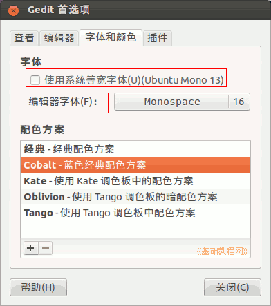

Ubuntu 入门操作指南
作者：TeliuTe 来源：基础教程网
二十二、gedit 文本编辑器 返回目录 下一课gedit 是一个文本编辑器，可以高亮提示代码，同时打开多个文件；
1、gedit 文本编辑器
1）点击主按钮，在搜索中输入 gedit ，点击打开程序窗口；
2）按 Ctrl+空格键 调出中文输入法，输入一句话然后把鼠标移到桌面最上边，找到“文件”菜单点击选“保存”；
3）把鼠标移到屏幕最上边，点菜单“编辑－首选项”菜单，在第一个“查看”标签“中，打勾“显示行号、启用自动换行”和“突出显示当前行”；
4）在第二个”编辑器“标签中，打勾“自动保存间隔”，将时间设短一些，上面的创建备份，会保存一个*.~的隐藏文件；
5）在第三个“字体和颜色”标签中，去掉“使用系统等宽字体”前面的勾，在下边把字号调大些，在配色方案中，可以选择 Cobalt方案；

6）在最后的“插件”标签中，可以勾选一些小工具，在各个菜单里找到，详细介绍可以看帮助菜单；
本节学习了 gedit 文本编辑器的基础知识，如果你成功地完成了练习，请继续学习下一课内容；
本教程由86团学校TeliuTe制作|著作权所有
基础教程网：http://teliute.org/
美丽的校园……
转载和引用本站内容，请保留版权信息和本站链接。